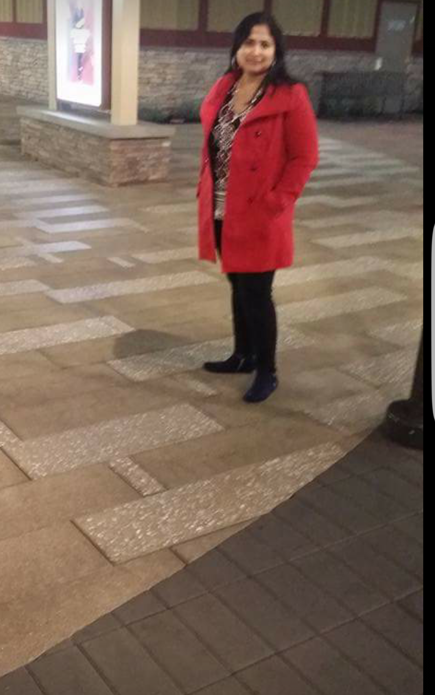

About Me

My name is Swetha Pathange and I started my career in web development through Internship. My professional experience involves creating websites for real esate companies, front end developer for san francisco city websites.
Throughout my career I learnt and used a number of web tools and technoloies such as Dream weaver, CSS, PHP and HTML. Having learnt about UC Berkeley Bootcamp I was very excited to enhance and deepen my programming skills. Here I am moving ahead towards my goals.